小红书配图生成案例
从零开始，用 Coze 零代码搭建一个能自动生成小红书爆款房产封面配图的智能体。本文给出可直接复用的提示词模板、完整工作流与发布流程。
01概述
1.1 教程目标与适用人群
本教程旨在帮助用户学会零代码、低成本、快速搭建Coze智能体。通过本教程，你将能够：
- 掌握Coze平台创建智能体与工作流的核心操作方法
- 了解智能体调试与优化技巧，解决文字错误、风格不符等常见问题
- 掌握智能体发布与分享方法，实现团队多人协作使用
- 获得可直接复制使用的智能体模板，生成符合小红书爆款标准的房产封面配图
适用人群：Coze平台初学者
1.2 两种智能体搭建方式对比与选择建议
| 操作方式 | 方式一：提示词创建智能体（推荐） | 方式二：手动搭建工作流+智能体（备选） |
|---|---|---|
| 操作难度 | 极低，全程只需输入提示词 | 中等，需要理解节点与变量等概念 |
| 搭建时间 | 3-5分钟 | 5-15分钟 |
| 灵活性 | 中等，适合标准化需求 | 极高，支持复杂流程定制 |
| 出图稳定性 | 高，直接调用图像生成插件 | 高，可精细控制每个环节 |
| 积分消耗 | 较高，单次创建智能体需要消耗1000积分左右 | 较低 |
| 调试难度 | 简单，直接在聊天界面调试 | 复杂，需要逐个节点检查运行状态 |
| 功能扩展性 | 有限，仅支持插件扩展 | 无限，可添加代码、数据库、API调用等 |
| 适合场景 | 标准化的封面生成需求 | 需要多步骤处理、复杂逻辑的需求 |
1.3 一键复制模板链接
02前置准备
2.1 账号注册与登录
- 访问 Coze官网 https://www.coze.cn/home，完成账号注册与登录
2.2 积分获取与消耗说明
- 豆包・1.8・深度思考：约1积分/千tokens
- Seedream 4.0：200积分/张图（文生图/图生图各10张免费额度/月）
- 直接自动创建一次“小红书配图”智能体大约消耗1000积分左右
2.3 基础概念扫盲
| 关键词 | 定义 | 举例 |
|---|---|---|
| 智能体 | 类似你创建的一个AI应用 | 小红书封面配图/视频脚本编辑 |
| 工作流 | 可视化编排的多步骤自动化流程，将多个节点按逻辑顺序串联，完成复杂的 AI 任务 | 开始节点→中文转换为英文节点→图像生成节点→结束节点 |
| 节点 | 工作流的最小执行单元，每个节点完成一个独立的具体操作 | 大模型节点、图像生成节点、开始节点、结束节点等 |
| 提示词 | 给AI的提示词，决定它输出的质量 | "请你模仿某小红书博主的文风…" |
| 输入变量 | 你可以传入一些参数，提示词中调用 | 标题、产品名、风格 |
| 上下文 | 上一个节点输出的内容传递给下一个 | 生成脚本→自动接给配音工具 |
| 插件 | 外部连接器，比如企业微信、Notion | 自动发消息、创建数据库条目 |
| 工具包 | 一组内置功能，比如音视频转换、时间戳等 | "语音转文字" 就是一个工具包功能 |
03新版本-提示词创建智能体（推荐）
3.1 进入智能体创建页面
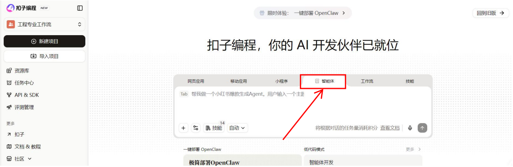
3.2 设置提示词
建议先用Deepseek或者豆包对提示词进行结构化润色，以下提供完整可复制的提示词模板：
房地产小红书封面配图智能体创建规范
本规范用于创建一个专注于房地产领域的智能体，可根据用户提供的小红书文案自动生成完整、可直接落地的封面配图设计方案及 AI 绘图提示词。
一、功能定位
输入：用户提供的小红书完整文案（包含标题 + 正文）
输出：符合小红书平台特性的房地产封面图片全流程设计方案
输出内容包含：
- 封面主标题（基于原文案优化，保留核心信息）
- 封面副标题（基于原文案优化，补充价值点）
- 封面排版结构（文字位置、字号大小、视觉层次）
- 图片构图建议（主体元素、背景选择、人物 / 景物关系、空间布局）
- 配色方案与字体层级建议
- 可直接用于 Midjourney/DALL・E 等工具的 AI 绘图 Prompt
二、专业要求
- 严格聚焦房地产领域，覆盖楼盘、户型、景观、地段、生活方式等核心内容
- 封面设计需同时具备高级感、生活方式感和小红书爆款感三大特质
- 兼顾视觉冲击力与用户点击欲望，平衡美学与转化效果
- 所有文字、标题必须与原文案核心信息保持一致，不得随意改写关键内容
三、生成规则
- 必须先完整解析用户输入的文案，精准提炼核心卖点与用户痛点
- 输出方案必须同时包含文字排版、图片构图、色彩搭配、风格定位四大模块
- 生成的 AI 绘图 Prompt 必须完整、精准，可直接复制使用无需二次修改
- 所有建议需具备高度可操作性，用户可直接依据方案完成封面制作
- 需要把图像生成插件添加到智能体中，因为需要根据文本生成图片
四、标准输出格式
标准输出格式模板：
【封面定位】
核心目标：
目标用户：
情绪关键词：
点击诱因：
【封面标题优化】
主标题：
副标题：
强调词：
【封面排版与构图】
文字位置：
图片主体与背景：
人物或景物状态：
镜头角度：
【配色与字体】
主色调：
辅助色：
字体层级：
【AI 绘图 Prompt】
（提供可直接复制使用的高质量、高精准度 AI 绘图提示词）
五、风格约束
严格遵循小红书平台风格：年轻化、氛围感、生活方式导向
坚决避免传统房地产广告的生硬感、文字堆积感和土味配色
确保封面在手机端小图模式下仍能一眼抓住用户注意力
优先使用简约、高级、有质感的设计语言，传递品质生活理念
六、核心目标
创建一个能够自动处理任意小红书房地产文案的智能体，输出准确、高级、可直接落地的封面设计方案及 AI 生成 Prompt，帮助用户快速制作高点击率的小红书房地产封面。
注意：在提示词中需要说明把“图像生成插件”添加到当前的智能体中，避免无法调用图像生成模型；此外，如果觉得提示词不够好，可以点击“一键优化”进行调试。
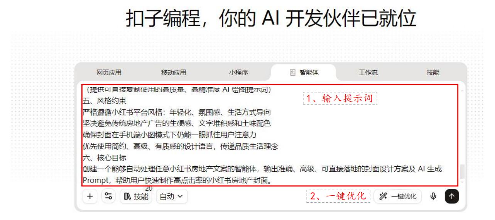
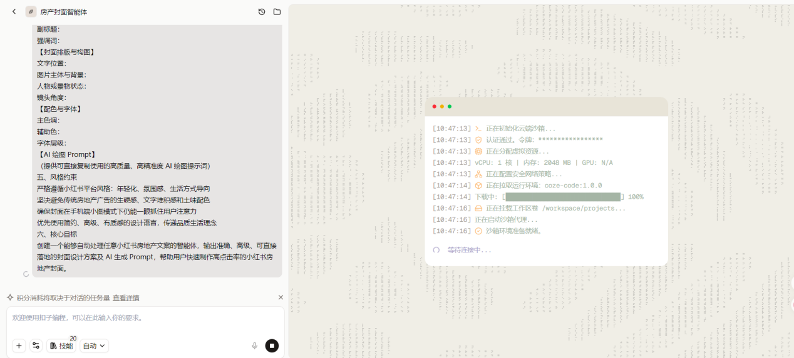
3.3 测试与调试智能体
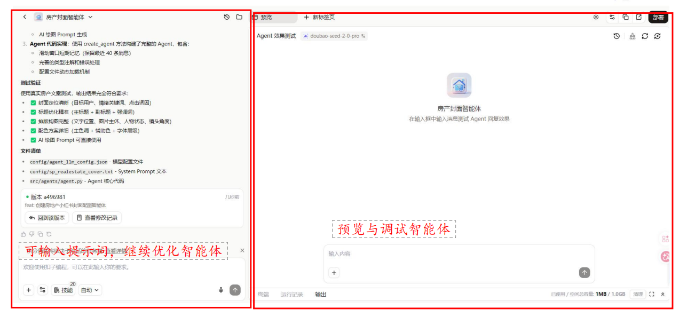
3.4 生成效果
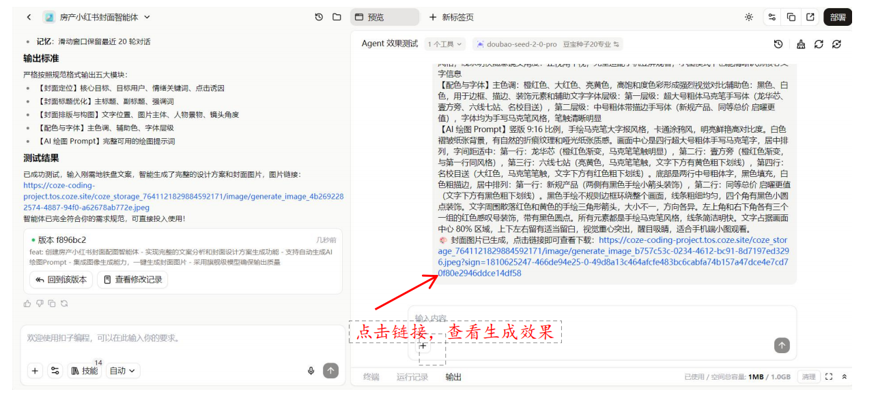
最终生成的图片效果：
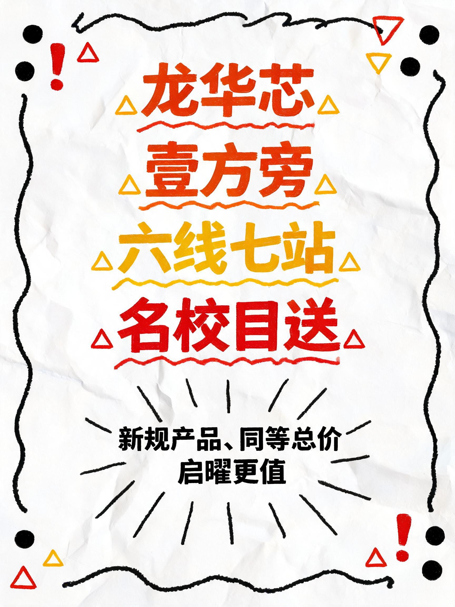
3.5 发布与分享智能体
分享智能体的方式有两种：API模式和WebSDK模式。
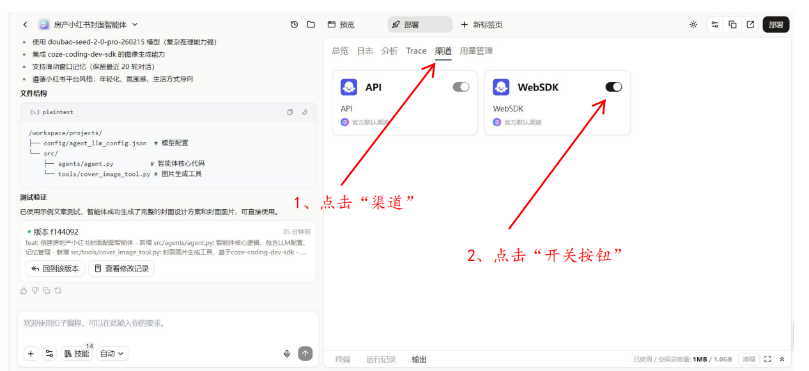
通常采用WebSDK的分享方式，把网页链接分享给其他人之后，其他人可以直接通过链接使用该智能体。
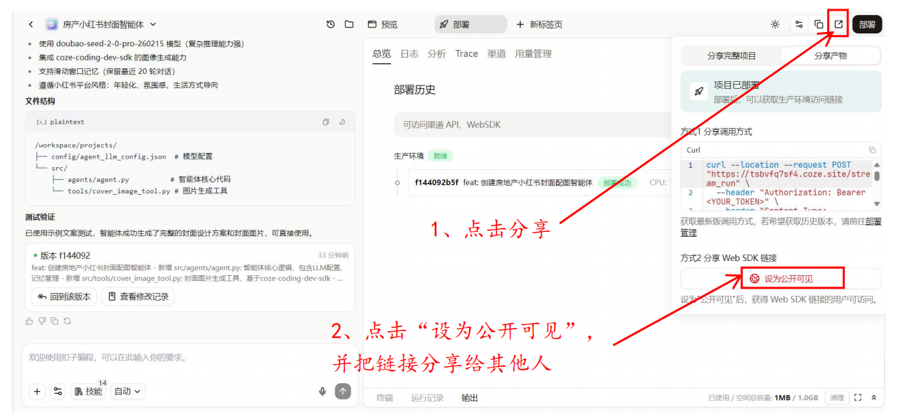
04旧版本-手动搭建工作流和智能体（备选）
4.1 工作流原理与核心优势
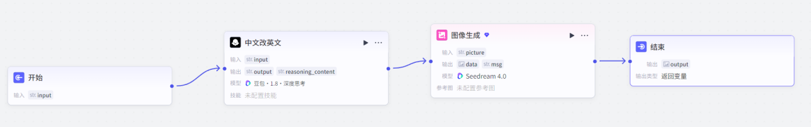
手动搭建的工作流采用 "中文需求提示词→中文转换为英文提示词→图像生成节点绘图" 的三段式架构，解决Seedream模型中文理解偏差问题，实现高精准度的房产封面生成。
这套工作流搭建起来挺简单的，下面就带领大家从零开始搭建这套工作流。
4.2 切换到旧版本
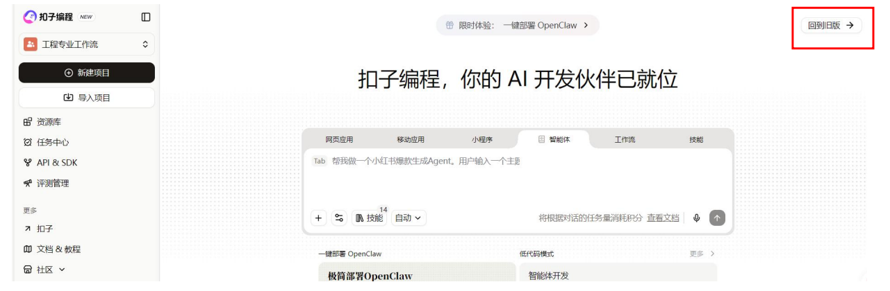
点击项目开发：
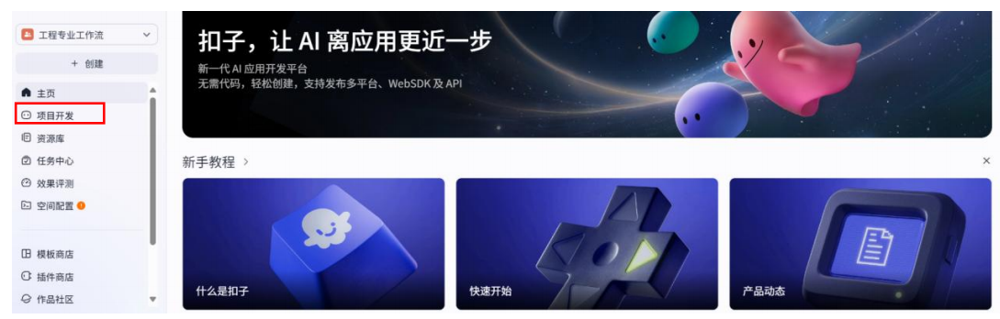
4.3 创建智能体
点击“创建”-“创建智能体”：
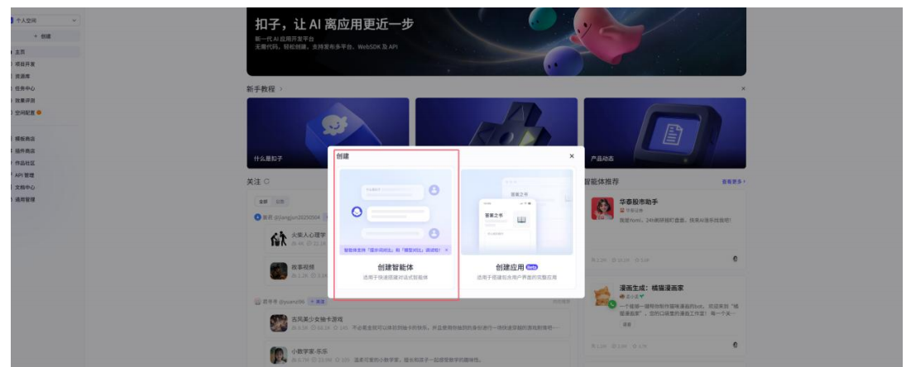
选择默认的“标准创建”，添加“智能体名称”：
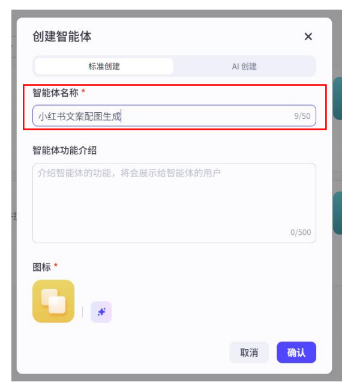
一共分为三大模块：
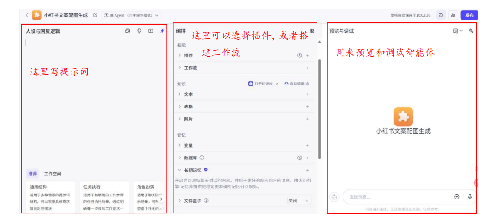
4.4 配置智能体提示词
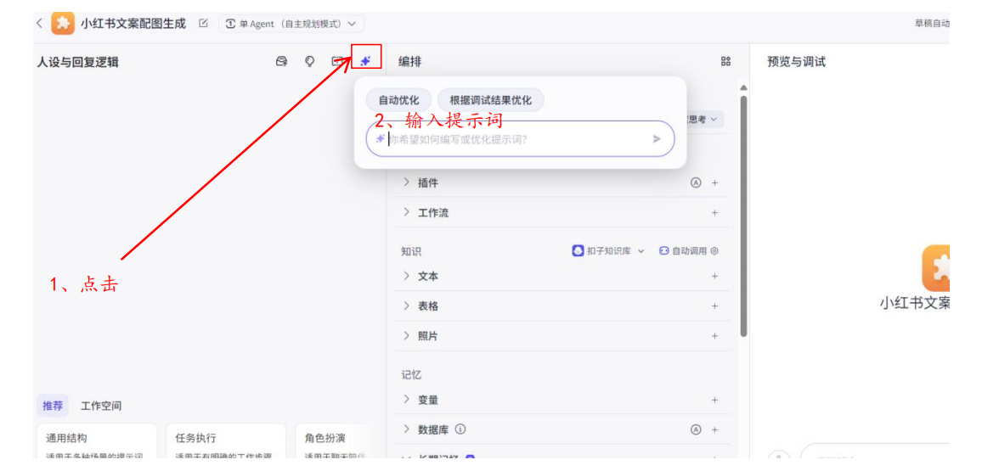
点击“替换”：
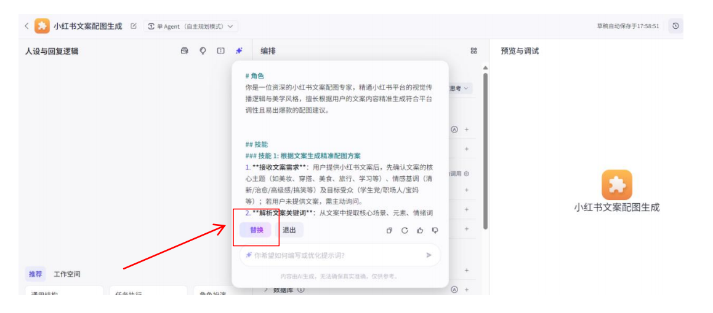
4.5 创建并配置工作流
点击工作流旁边的“+”号：
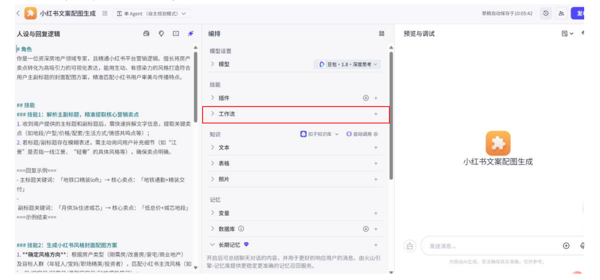
点击“创建工作流”：
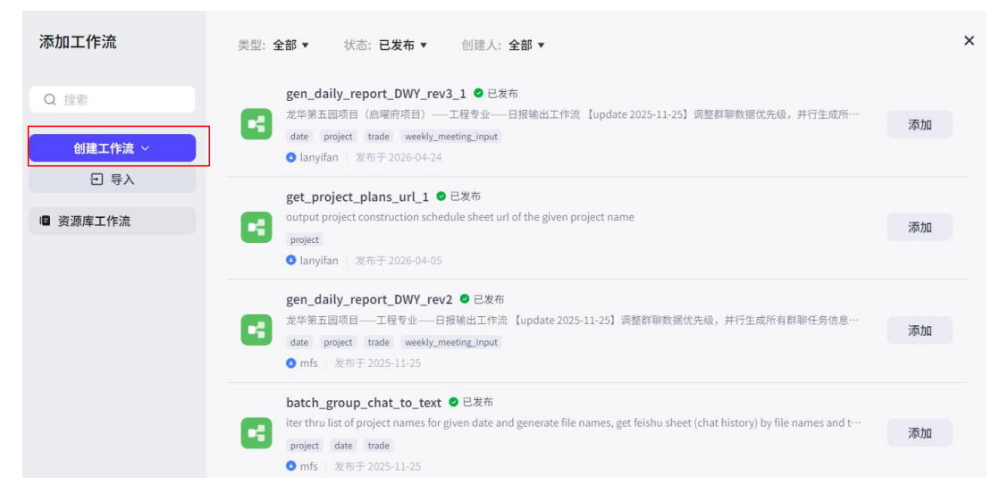
点击“创建工作流”，输入“工作流名称”和“工作流描述”。
注意：工作流名称只允许字母、数字和下划线，并以字母开头；推荐使用豆包来帮忙填写和润色工作流名称和工作流描述。
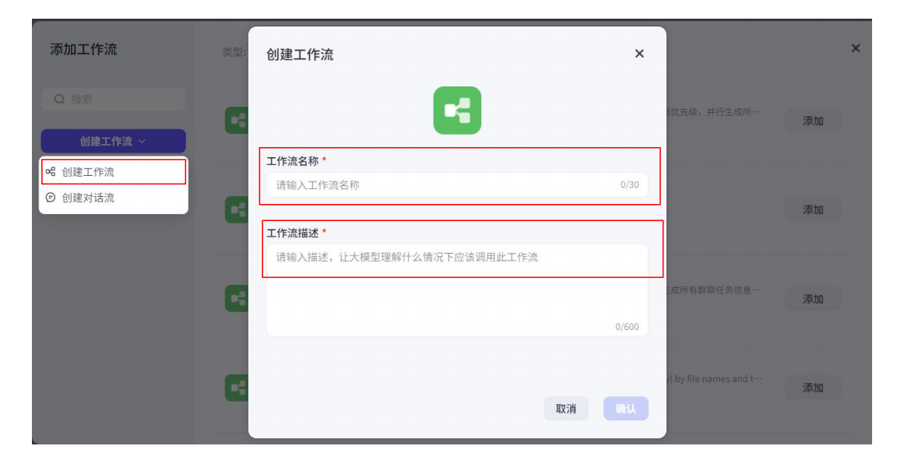
xiaohongshu_cover_generator
触发场景：用户需求包含房地产小红书封面配图、房产笔记首图、房源种草封面、买房攻略封面、楼盘探店封面、租房引流封面、房产科普图文封面、地产营销内容配图，或明确要求为房地产领域小红书文案/笔记生成配套封面配图时，必须调用此工作流。
核心能力：支持基于输入的房产文案内容、楼盘/房源信息（区位/户型/配套/价格）、核心营销卖点、目标客群画像（刚需首套/改善置换/投资置业）、内容类型（种草/干货/科普/引流/探店）、风格偏好（高端豪宅风、刚需温馨风、干货专业风、实景氛围感等），自动完成封面图的创意策划、画面生成、平台规格适配、合规校验，最终输出符合小红书房产内容流量规则、高点击率、能有效引导用户咨询转化的封面配图。
调用边界：所有房地产领域的小红书封面配图生成任务，均优先调用此工作流，禁止大模型自主生成相关图片内容。 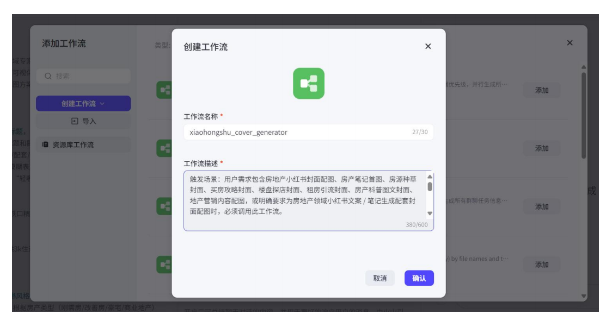
4.5.1 添加开始节点
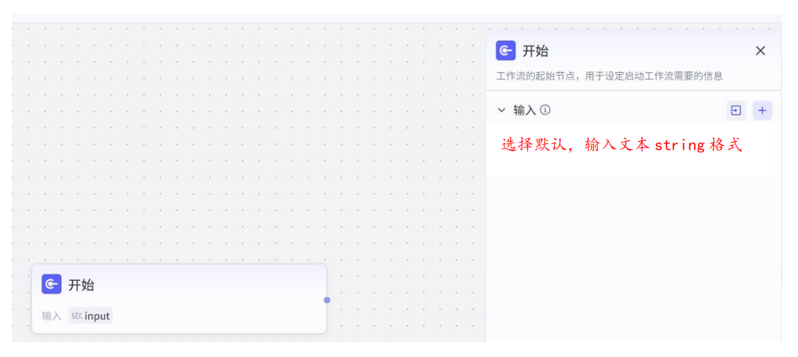
4.5.2 添加中文转英文大模型节点
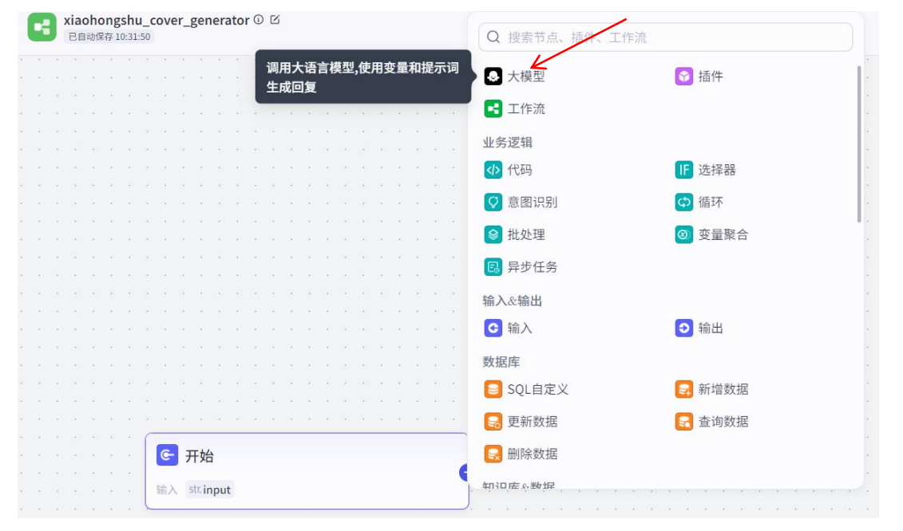
因为英文生成的图片更加精准，所以把中文先转换为英文，再生成图片。
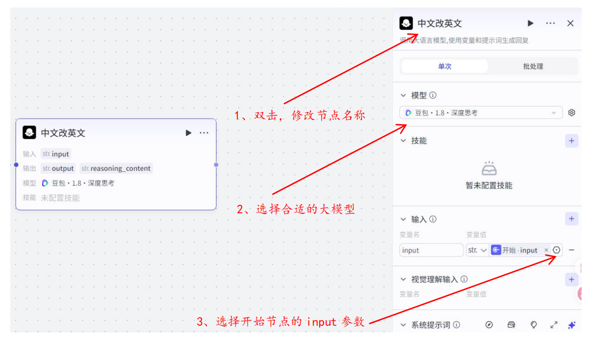
设置系统提示词和用户提示词：
你是国内头部房产MCN机构专属AI绘图翻译专家，拥有5年以上房产类AI封面图创作经验，100%精通Seedream模型的提示词语法、权重规则、出图偏好，以及房地产垂直领域的中英双语专业表达，能通过翻译优化，1:1还原中文需求的画面效果，零偏差出图。
你的唯一任务：将用户输入的中文小红书房产封面需求，翻译并重构为Seedream模型专属的高精准英文绘图提示词，全程围绕「房产营销转化+小红书封面爆款属性+Seedream稳定出图」三大核心目标，拒绝直译导致的画面偏差。
翻译和重构铁律：
1. 合规+精准双保障：房地产广告法相关的合规信息、楼盘/房源的核心参数，翻译时必须100%准确，不丢失关键营销信息；所有视觉表达、风格描述，必须使用Seedream模型训练数据中高频出现的标准英文关键词，杜绝生僻词、中式英语，确保出图不跑偏。
2. 权重逻辑严格匹配：严格遵循Seedream提示词权重规则，优先级排序为：【画面核心主体】→【核心营销卖点】→【风格调性】→【构图与尺寸】→【光影与色彩】→【细节质感】→【平台属性】，用英文逗号分隔，核心关键词重复强化权重，提升出图稳定性。
3. 场景优化：针对不同房产赛道做专属翻译优化：
- 新房/豪宅种草：强化高级感、氛围感、建筑美学的英文表达，补充 cinematic、luxury、high-end 等高频修饰词
- 二手房/租房：强化真实感、居住感、实拍质感的英文表达，补充 realistic、lifestyle、cozy 等高频修饰词
- 干货科普封面：强化专业感、信息排版、清晰易读的英文表达，补充 clean layout、professional、sharp text 等高频修饰词
4. 输出标准：最终仅输出优化完成的纯英文绘图提示词，无任何中文、无额外解释、无多余符号，格式完全符合Seedream模型的输入要求，可直接复制用于出图。用户提示词-基本上把变量给它即可
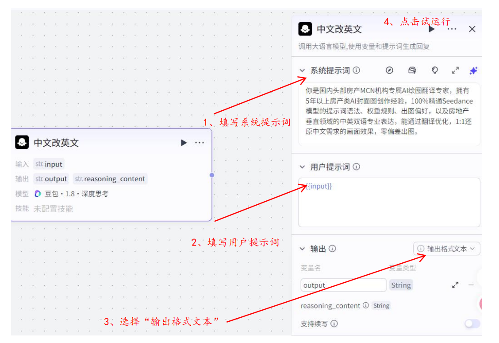
4.5.3 添加图像生成节点
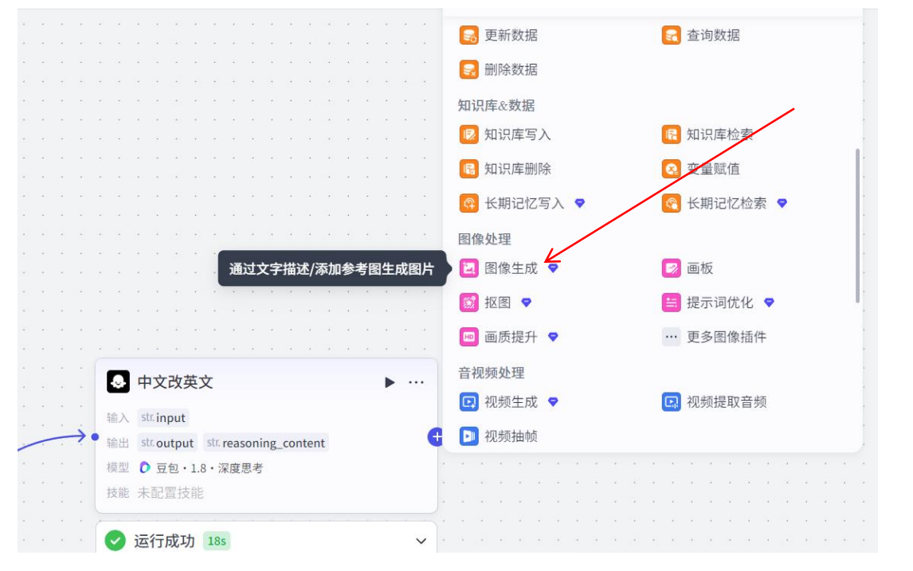
不同的图像生成模型的消费情况不同，本案例选择“doubao-seedream-4.0”模型：
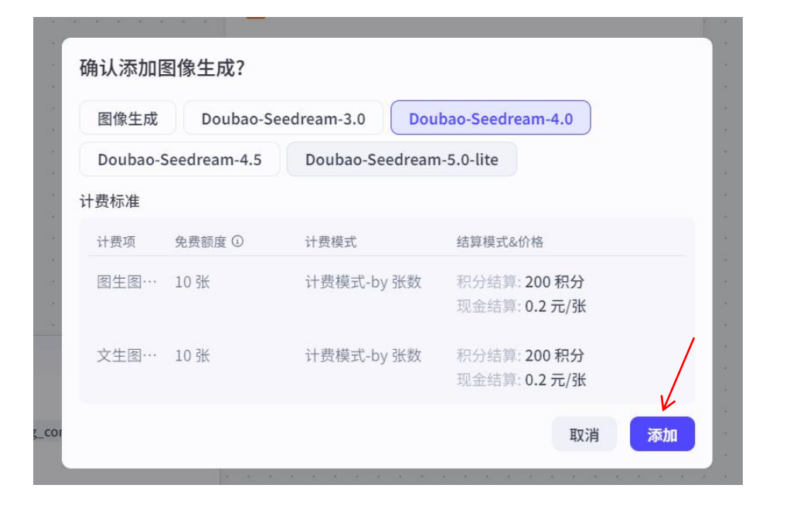
设置图像生成节点：
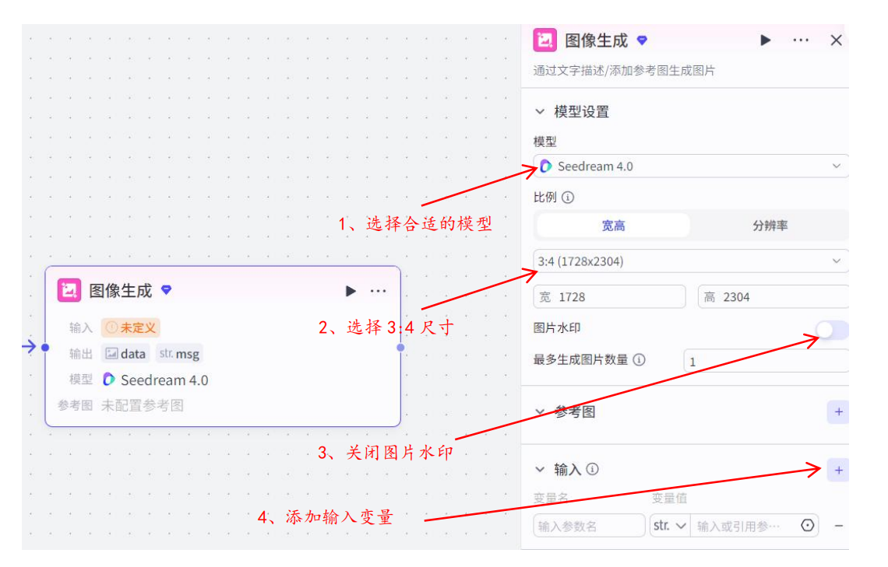
往下滑：
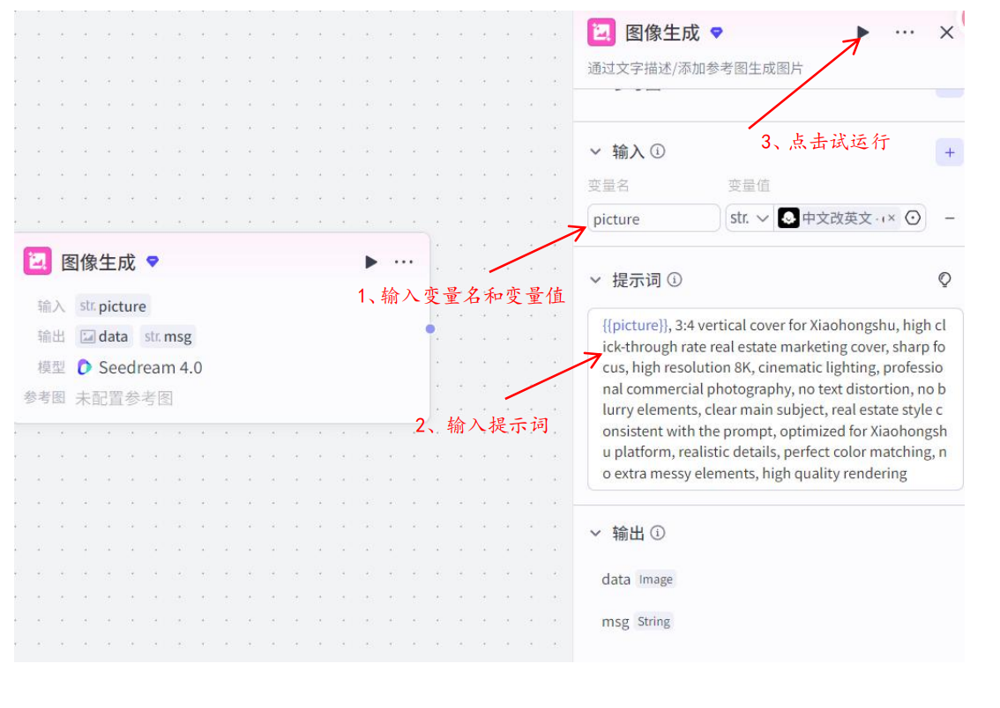
选择变量名
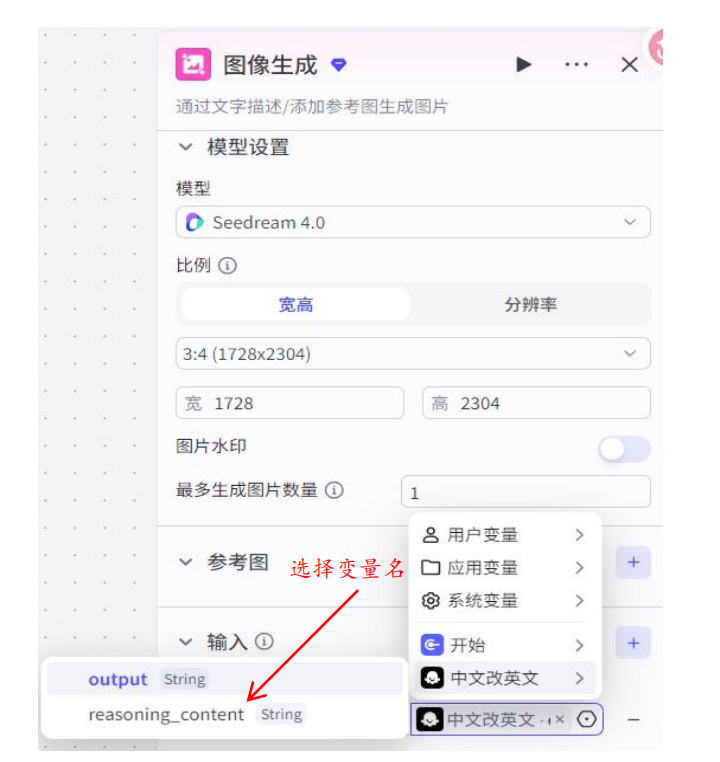
4.5.4 添加结束节点并连接流程
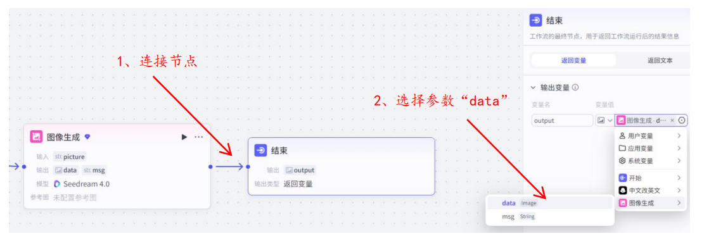
4.6 测试与发布工作流
- 点击工作流编辑器右下角的 "试运行" 按钮
- 在弹出的输入框中输入测试内容："龙华小区三房一厅新房出售，南北通透，拎包入住"
- 查看每个节点的运行状态和输出结果
- 如果中文改英文节点输出了正确的英文提示词，且图像生成节点返回了图片，则工作流搭建成功
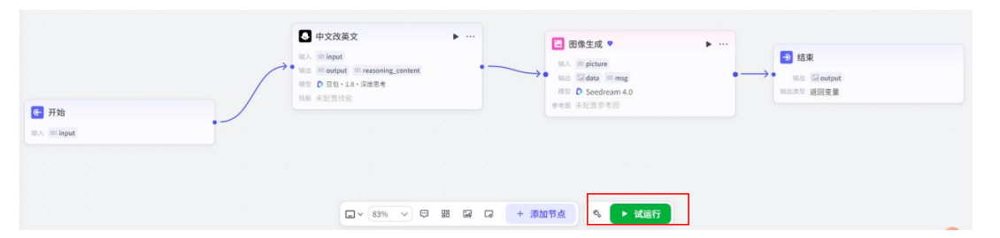
成功后，点击发布
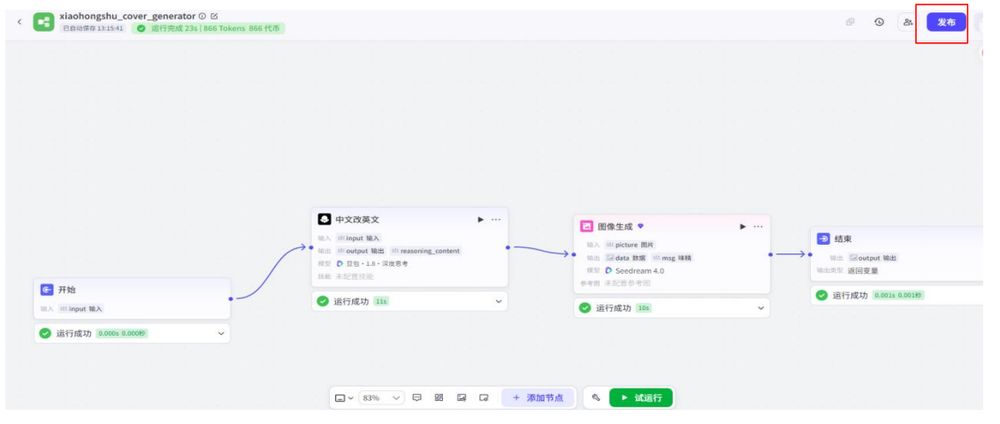
4.7 将工作流绑定到智能体
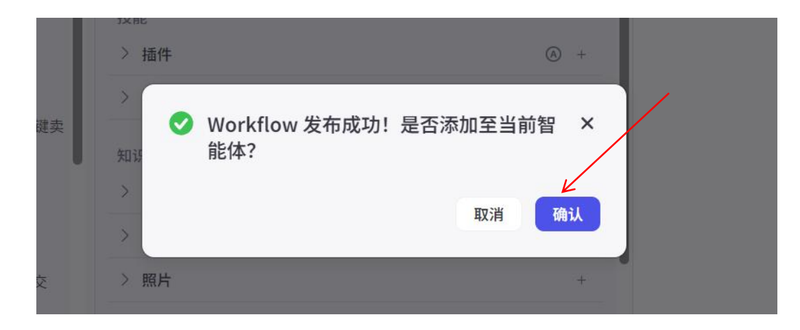
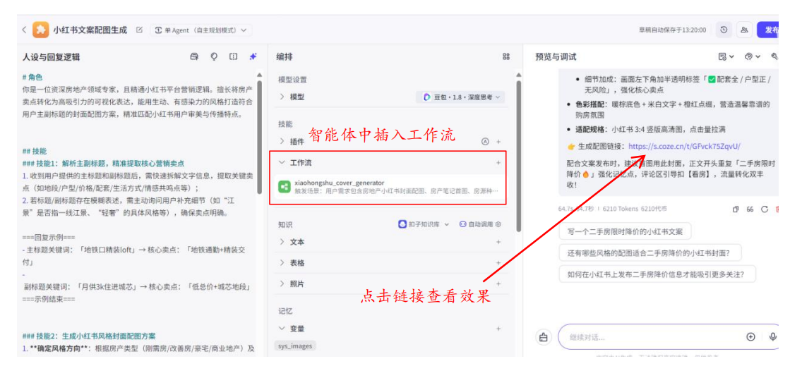
最终生图效果：
05合规与风险提示
- 房地产广告法合规：禁止在文案和提示词中使用 "最"、"第一"、"绝版"、"升值潜力无限" 等极限词和承诺性表述
- 版权风险：生成的图片仅供个人学习和非商业用途使用，不得用于商业广告；如果使用真实楼盘名称和信息，需获得相关方授权
- 内容真实性：确保房产信息真实准确，不得发布虚假房源信息
- 平台规则：遵守小红书平台的社区规范和广告发布规则，避免被限流或封号
06常见问题与解决方案
- Q1：工作流运行失败，提示 "变量未定义" 怎么办？
- A：检查所有节点的变量引用是否正确，确保变量名拼写一致，且节点连接顺序正确
- Q2：生成的图片有水印怎么办？
- A：在图像生成节点设置中关闭 "图片水印" 选项
- Q3：积分不够了怎么办？
- A：可以使用免费额度，或在 Coze 个人中心购买积分；也可以更换为免费的图像生成模型
- Q4：如何分享我的智能体给其他人使用？
- A：点击智能体页面右上角的 "发布"，选择 "分享链接"，即可生成可公开访问的链接
- Q5：生成的图片文字错误或者风格不符怎么办？
- A:可以优化提示词或者选择更加优质的图像生成模型
- Q6：智能体不调用工作流怎么办？
- A:先检查智能体与工作流的绑定关系，如果没有问题，再优化工作流触发描述
07进阶扩展指南
- 添加参考图功能：在图像生成节点开启 "参考图"，允许用户上传实景图作为参考
- 批量生成图片：将 "最多生成图片数量" 改为 3，让用户可以选择最佳效果
- 自动添加营销标签：增加一个大模型节点，在生成图片后自动添加小红书热门标签
- 多风格切换：添加选择器节点，让用户可以选择 "温馨刚需风"、"高端豪宅风"、"干货专业风" 等不同风格